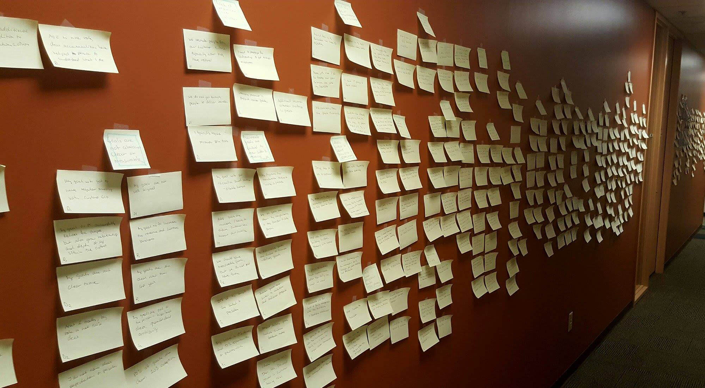
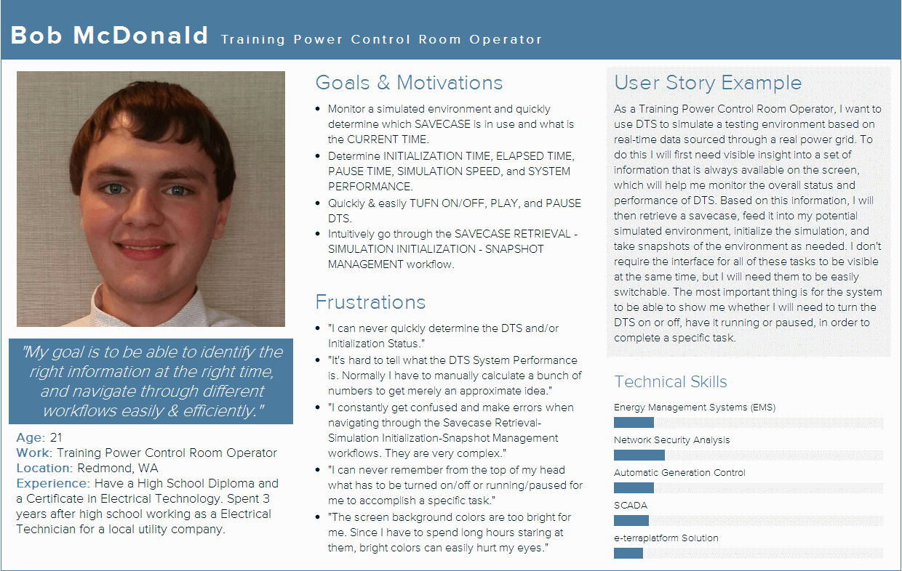
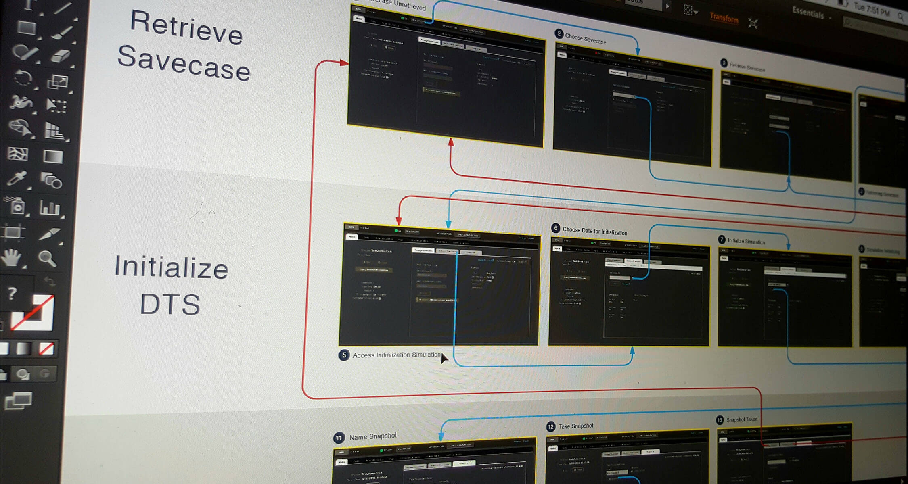

Summertime = Internship mode on
For Summer 2016, I was very fortunate to have landed an opportunity to work at GE Energy Connections as an Interaction Design Intern, within the Grid Solutions team. My main project revolves around the redesign of "e-terrasimulator Dispatcher Training Simulator (DTS)" - a software used by electrical grid operators to simulate power distribution environments for training purposes.
e-terrasimulator DTS - launched in the 1980s and never been touched since. A true design opportunity!
The field is unique, the product is complex (and old), and the need for a better User Experience/Interface that more closely aligns with modern design standards and patterns is on the agenda. It is both a design challenge and opportunity, and I surely am enjoying every bit from this meaningful experience.
Always seek for the right question
Every Product Design process starts with laying out the right questions. Accordingly, each question corresponds with a specific stage, and an appropriate method to find the right answers. In this respect, the very first step which we took was scheduling a meeting with the wider product team to understand the context of the project itself. What called for this design initiative? Which products or features are we focusing on? What is the timeline of the project in accordance with the product development roadmap? What kind of data and resources are immediately available to us? etc.
The goal of this meeting is simply to obtain a clearer picture of the product in question (how it works), as well as where and how can design make an impact to its development (how can it work better). Last but not least, if not very important, this was also a chance for the product team to deliver any business objectives and/or requirements that needed to be addressed.
User interviews
No user research has ever been conducted for DTS. As such, the only data available to us were customer complaints or requests for specific changes to the product. In order to gain a deeper understanding of our users’ context, we decided to conduct formative research in the form of user interviews, with questions mainly revolved around our users’ background, needs, goals, motivations, challenges, frustrations, and examples of their typical workflows.
In this respect, we carried out this task through the GE Grid Solutions Users Conference - an annual conferences where GE Grid Solutions and their customers gather to discuss product experiences and potential areas for development.
These users groups were super important to us as it provided one of the few platforms where we could direcly interview our users and obtain their valuable feedback on DTS.

At the GE Grid Solutions Summit. Trade show perk #1: A party always comes after.
During this summer, we had a chance to participate in a users conference held in Denver, CO. A total of of 10 interviews were conducted with questions mainly revolved around our users' background, needs, goals, motivations, challenges, frustrations, and examples of their typical workflows.
Affinity diagram
With a pocketful of data collected from the users group, we now needed to take a step back and organize them more structuredly. To do this, we created an affinity diagram. There were essentially two objectives to this exercise. First, to identify common patterns and themes that emerge from current user experiences. Second, to begin visualizing potential solutions and how they might be connected via different interations.
Personas/User stories
Persona profiling was our way of humanizing the data we had. If the affinity diagram allowed us to rearrange information in a more meaningful way, personas and their related user stories directly pointed our vision at the target users. They reminded us of who we were designing for, and prevented us from falling into the trap of featurism.
The personas we created were all role-based, as each persona would interact with DTS differently depending on their role and responsibilities. In the end, our wall ended up with five personas and 20 user stories that would subsequently accompany us throughout the rest of the project timeline.
Design objectives
To smoothly transition to the design stage, and accordingly better guide our design approach, we produced a set of design objectives based on the insights previously generated from our research. Generally, the design objectives entail the improvements of:
- Information design and content layout via an effective information architecture.
- Visibility of system and application statuses.
- Affordances and signifiers of various system management features.
- System feedback and feedforward.
- User control and freedom (especially in response to errors made in the workflow).
- Consistency in terminology and labels.
- Icon recognition.
- Usage accelerators (mainly to help expert users advance through their workflows faster).
- General visual components to help clean up DTS and make it more pleasant to users.
Ultimately, our vision is to streamline and simplify the basic interaction models users have with DTS, making their product experience the more delightful, enriching, and self-educational (helping users learn the product and its functionalities via a well designed experience - an integral aspect of DTS, itself used mostly by trainee operators for training use cases).
Design: An iterative process
Good results only surface following countless layers of refinement. Product Design is particularly a clear example of this value. Naturally, my design process was carried out with a largely iterative nature: design, test, repeat.
Paper sketches
To begin visualizing our research data and ideas, we held ideation sessions with the only tools being whiteboards, markers, papers, and pencils. Paper sketches and/or prototypes were fast, efficient, and cheap, which means we could move along quickly without having to commit a lot of resources.

I tried to look out for inspiration from various internal as well as external products, whether they are DTS systems or not. Specifically, a lot of time was spent studying the design patterns and approaches showcased in complex industrial software.
1st iteration: Wireframes
The 1st iteration was mostly a direct translation of the paper sketches into digital wireframes. An effort was made to follow certain corporate styleguides, but generally the designs were left at a low-fidelity level. It was a good way to work around some of the ideas that stood out more than others, based on their relevance to users, design sense, alignment with usability standards, potential for efficient interaction with other components etc.
2nd iteration: Refined wireframes
We shared the wireframes with the whole design team for feedback. I think critiquing is a vitally important component of design, as it allows many creative minds to collaborate on spotting gaps as well as design possibilities in the solution that might have been missed (which is exactly what happened when our wireframes were shared; a lot of remarks along the line of "that's so obvious" or "why didn't I think of that?" were noted).
Nonetheless, with a lot of good feedback notes, we brought the wireframes together again and came up with the 2nd iteration of the design. This time, we also made sure to follow some of the defined user workflows. Doing this helped to nail the user stories into our solutions, and ensured that they were as "user-centered" as optimally possible.

3rd iteration: Prototype
At this stage, we conducted task-based usability tests with five users. These users were recruited from existing customers who were currently using the product on a day-to-day basis. We applied the System Usability Scale (SUS) and calculated the SUS score following our usability tests, using a simple follow-up survey which we gave to our participants.
Following the tests, and after another critique session with the design team, we incorporated the overall feedback into the 3rd iteration of the design. A more mature design with a set of probable features were in the making. An interactive prototype was also created to represent our design concepts in a clearer and more resounding manner.

A final presentation
All things come to an end, and before long I found myself presenting the final design solution to the product team at the end of my 12 weeks.
As I revisit the experiences I've gone through this past summer, I think the best thing about it is that I was never a lone wolf on this project. As I collaborated my way cross-functionally throughout the summer, I began to truly appreciate the value of teamwork. Without the presence and constant guidance offered by the whole product team, I don't think the project would have been as positive as it was.
The fact that the project goals were full of ambiguities was also one of its defining characteristics. It forced me to be resourceful, and taught me the important skill of envisioning the big picture by connecting the small dots. This ultimately helped me to identify the right challenge, ask the right questions, and utilize the right methods.
A few follow-up remarks
For me, this project was more than just an opportunity to execute a user-centered design process. A lot of the learnings and experiences along the way pushed me to think more and more about the difference between UX Design within the classroom and the real world. Below is a condensed summary of some lingering questions and thoughts that helped to make this internship such a memorable personal experience.
Who did we design for? Why?
Our primary users are Power Control Room Operators in training. Essentially, power control room operators are professionals whose job is to to manage and monitor the day-to-day operations of a specific power grid. Before they can officially become a certified operator and be legally authorized to work, they have to undergo up to one year of training. During this time, the trainees will work mainly with software and systems that can simulate “fake” environments that are exact duplicates of the real power grid itself. DTS is one of these systems used.
From a design perspective, DTS has never been exposed to any user-centered research design work ever since its initial launch during the late 80’s. Most system updates typically came in the form of customer requirements without much attention to understanding their real needs. A lot of customers have over time expressed major dislikes for the current state of the product, pointing to its bad usability and out-of-date interface. As a matter of fact, by the time I joined the team in June 2016, GE had just failed to renew two contracts from major clients who have opted for a competitor’s offering. As such, the redesign project for DTS stood out as an important initiative for the division’s executives.
What approaches did we use to find the right design?
We decided to approach this design problem from scratch, as no prior user research exists for DTS. We conducted formative research in order to build up a more solid understanding of our users’ context, and accordingly take the product through an iterative process of designing and testing to continuously refine our design solutions.
What challenges did we run into during the design phase?
As a software product, DTS is technically complex by nature. Throughout the design phase, due to this complexity, we ran into a lot of challenges which revolved around understanding the architecture behind the platform, and how could we ideate solutions that were technically feasible and made sense from an engineering standpoint.
How did we address this challenge?
For us, the best way to address these barriers was to maintain a constant line of communication with the engineering team and other relevant stakeholders within the overall product team. Indeed, transparent communication helped all of us to enhance our Product IQ, and at the same time ensured that we were designing both for our users and for shipment.
What were my specific contributions?
Within the formative research phase, I helped drive our user interviews by serving both as the moderator for some sessions and as a note-taker for others. As a team of two designers, we worked together to analyze and synthesize our research data and build a number of artifacts that could help us capture our understanding. This included affinity diagrams, personas, user stories, empathy & journey maps.
As an individual contributor, I mostly found myself working around low-fidelity interactive prototypes. Typically I would simply start with just sketches on whiteboards or papers to conceptualize different high-level approaches. As we began to figure out the user flow and further finalize the user story, I would translate these sketches into interactive prototypes with Axure that can better illustrate our design concepts and flow.
What did I help others create?
Mostly, it was my design partner’s responsibility to produce high-fidelity pixel-perfect mockups (taking into consideration factors such as typography, branding, color palette, iconography). Nonetheless, I had a lot of opportunities to provide some help in this aspect when she had too much backlog. In this regards, my main tool of trade for visual design was Adobe Illustrator.